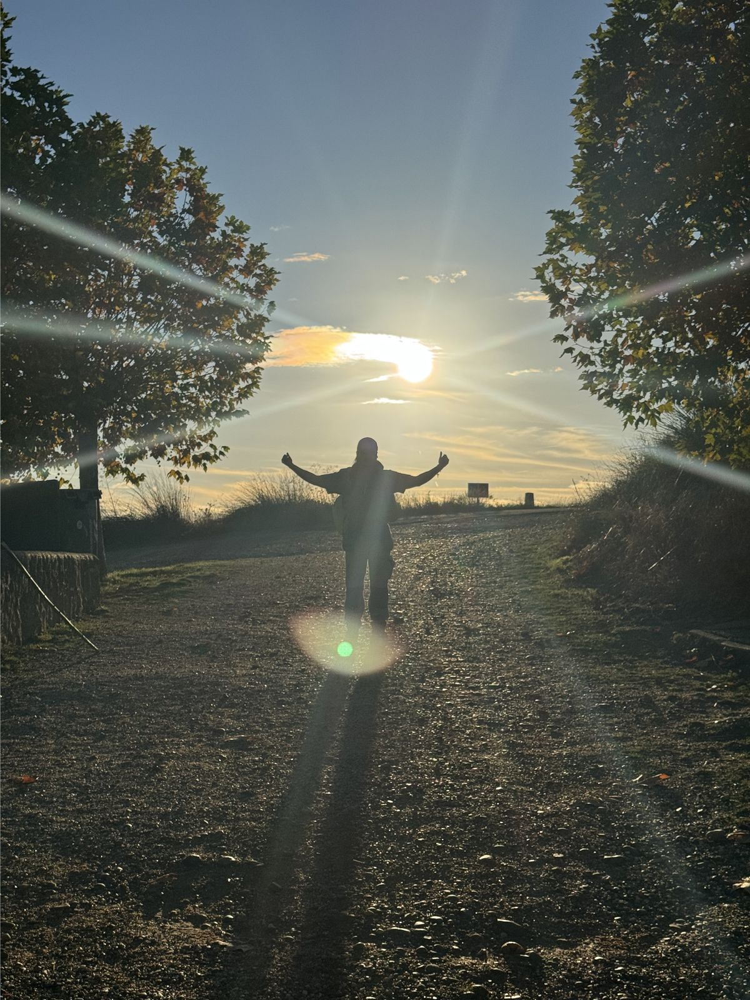
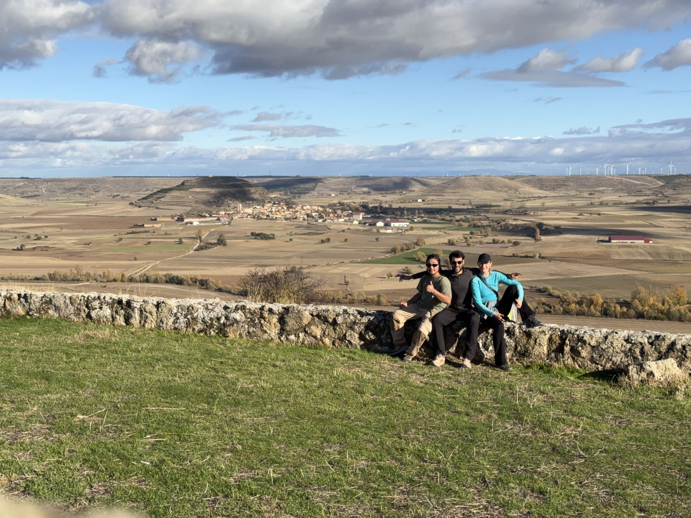
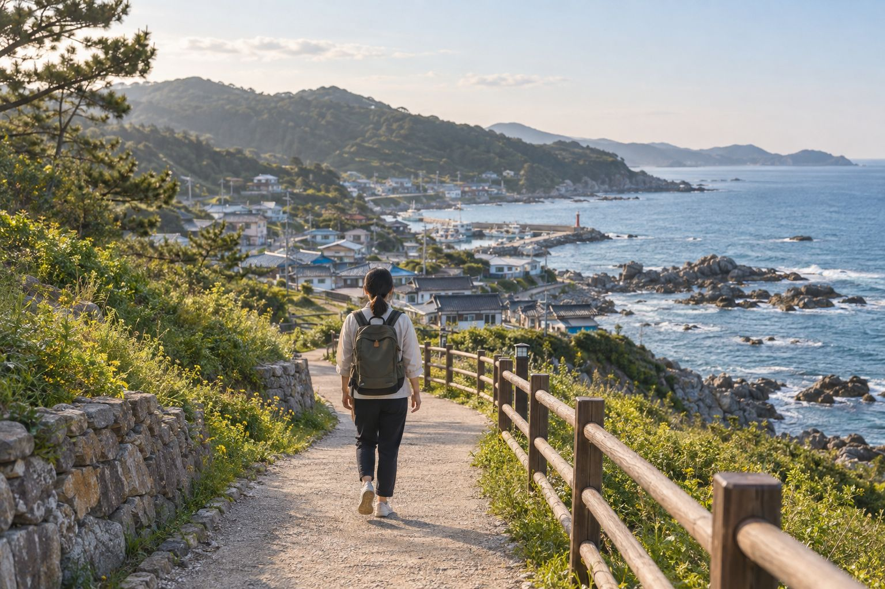

Explorer
Free
Find your journey and see what each day holds.
- Browse every journey
- Stage overviews and distances
- Stays and food near each finish
- Pilgrim Story journal and passport stamps
The Korean Camino · Private beta
Multi-day walking journeys on Korea's coasts, islands and temple roads — planned around why you walk, with a bed near every finish and a story that stays with you.
Launching with 10 journeys on Jeju and Korea's East Coast · English & 한국어

DAY 1 / 5East Coast Journey
Anmok → Jeongdongjin
The opportunity
From Jeju's island paths to the long-distance network that rings the peninsula, the routes are built and waymarked. But they're presented as courses — a distance, a difficulty, a GPS line. Planning a real multi-day walk still means stitching it together yourself.
Figures approximate, from public trail operators.
Planning a 5-day walk today
One journey. Stages, stays, food, transport and stories in a single plan.
Visiting from abroad? Add Korean-only timetables, menus and etiquette to the list.
Where it began
After a year on a working holiday in Iceland, I travelled through Europe on the way home — and the trip ended on the Camino de Santiago. What stayed with me wasn't a landmark. It was the rhythm: walk all day, meet strangers, look back on the day, do it again.
Back in Korea, one question wouldn't let go. We have Jeju Olle, the Haeparang-gil and thousands of kilometres of trails. Why do we only ever treat them as trekking courses?
“The trails were already here. What was missing was a way to turn them into a journey.”

How it works
Rest, reflection, challenge, the sea, temples or culture. Start with your reason, not a map.
Your purpose, days and fitness are matched to a curated route — from 3-day resets to week-long walks.
Daily stages with timings, stays within 1 km of each finish, food and transport on one screen.
Guesthouses, market kitchens, bathhouses and temple stays, matched to when you arrive.
Answer one question each evening, collect stamps, and leave a line for the next walker.
Stage Planner
Tell us how many days you have and how far you like to walk. The route is split into stages that end where there's a bed — within 1 km of the finish — with food, transport and a question for the evening.
5 days · 101.2 km · Anmok Coffee Street → Jangho Port
Sample itinerary for illustration. Distances and place counts are approximate.
The first journeys
Each journey is a complete plan: who it suits, day-by-day stages, stays near every finish and the stories of those who walked it first. We launch with ten on Jeju and the East Coast.
Jeju · Seogwipo coast
Short days, early nights and warm stays by the sea. Built for switching off.
Daily distances in km: 12.4, 14.1, 11.8
Get notifiedHaeparang-gil · Yeongdeok → Uljin
A week of long, quiet coast with few crowds — time to hear yourself think.
Daily distances in km: 17.5, 19.2, 18.4, 20.6, 17.9, 19.0, 21.4
Get notifiedHaeparang-gil · Gangneung → Samcheok
Sunrise beaches, harbour towns and a cliffside boardwalk along the East Sea.
Daily distances in km: 18.3, 20.1, 20.2, 22.3, 20.3
Open in Stage PlannerJeju · east coast villages
Stone walls, haenyeo diving villages and market lunches, at island pace.
Daily distances in km: 13.2, 15.0, 12.6, 14.8
Get notifiedYangyang · seaside temples
Gentle coastal days between two seaside temples, with a night of templestay.
Daily distances in km: 11.6, 12.8, 9.9
Get notifiedAndong · Hahoe Village
Hanok stays, a UNESCO-listed folk village and scholars' paths around Andong Lake.
Daily distances in km: 14.2, 16.5, 15.1, 13.7
Get notifiedSample journeys for illustration; stage distances are indicative.

Stay · Eat · Experience
Long walks finish far from hotel districts. We map what walkers need near each finish and connect you with the small businesses that keep these towns alive.
Guesthouses, minbak and small hotels, filtered by what matters after 20 km on foot.
Market kitchens, seafood canteens and early-opening cafés, with menus explained.
Templestays, meditation and yoga, bathhouses and cooking with locals, timed to when you arrive.
Walker-friendly filters
When walkers sleep, eat and shop in small towns, a trail stops being a line through a region and becomes part of its economy.
Pilgrim Story
Each evening the app asks one question. Answer with a photo, a few lines or a voice note. The next walker reads the trail through the people who walked it first.
DAY 7 · 21.4 kmExample
7-Day Finding Myself · arriving in Uljin
What did you feel on the road today?
“I thought walking alone would be lonely. Today, being alone felt easy.”
Before you, on this stage
“Stopped at the harbour for noodles. Left lighter than I arrived.”
“Rain all morning. The pine forest smelled like home.”
Digital Pilgrim Passport
Collect a stamp at each stage finish, together with the one line you wrote there. Finish, and your certificate reads less like “101 km completed” and more like the story of your five days.
For international walkers
Korea is safe, well connected and generous to walkers. The hard part is information. Every journey carries the practical and cultural context you need, in your language.
KTX, intercity buses and T-money explained for every stage, including where to leave early.
What a minbak is, how check-in works, and what to order when the menu is handwritten.
Temple manners, bathhouse basics and how to thank your minbak host.
Trail conditions, weather detours and who to call: 112 police, 119 fire and ambulance, 1330 travel hotline.
Stage notes and maps saved to your phone for quiet stretches of coast with weak signal.
English and Korean at launch. Japanese and Chinese next, led by where walkers come from.
Why Walk Korea
We don't compete on map data. We build on public trails and add what turns a route into a journey: a purpose, day-by-day planning, local stays and stories.
| Feature | Trail portals | Global hiking apps | Camino guide apps | Walk Korea |
|---|---|---|---|---|
| Trail search & maps | ||||
| Turn-by-turn navigation | ||||
| Plans the walk day by day | ||||
| Beds near each day's finish | ||||
| Starts from why you walk | ||||
| Reflection & shared stories | ||||
| Korean local experiences | ||||
| Culture guide in your language |
Strong Partial Not a focus Our assessment of typical features in each category.
Plans
Free
Find your journey and see what each day holds.
Premium Pricing announced at launch
For walkers who are going: a plan that adapts to you.
For partners
We earn when walkers book stays and experiences along their journey — so our growth is tied to the towns on the way.
Regions & tourism organizations
Package your walking routes as products — a “3-Day Healing Walk” for your county. We design the itinerary and multilingual content, bring local businesses on board and report on bookings and length of stay.
Talk to us about your regionStays & local hosts
List your guesthouse, kitchen or experience on the stages that end near you. Show walkers what you offer — laundry, an early breakfast, luggage transfer — and welcome guests who arrive on foot.
List your placeFAQ
No. You walk independently, at your own pace. We plan the journey and connect you with local stays and experiences, which you book directly through the app.
About ten journeys on sections of the Jeju Olle Trail and the Haeparang-gil on the East Coast. New regions follow where local partners join.
No. Journeys, stage notes and practical guides are in English and Korean at launch, with Japanese and Chinese next.
Many walkers are comfortable with 15–20 km on consecutive days. The Stage Planner lets you choose your distance and ends each day near a bed.
Korea is generally a safe place to walk solo. Every stage includes recent trail conditions, detours and emergency contacts, and Premium adds live location sharing.
Journeys are built on public trails run by local governments and trail organizations, such as the Korea Dulle-gil and the Jeju Olle Trail. Walk Korea is an independent service and isn't affiliated with them.
We're preparing a private beta. Join the list and we'll invite you when the first journeys open.
Private beta
Tell us what you'd walk for. We'll invite you when the first journeys open on Jeju and the East Coast.